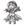

|

Dark Master Schmidt
Author of 7 Stories |
Disclaimer:
Dark Master Schmidt: I don't own Ranma; if I did, I wouldn't be writing fanfiction. The only thing I own is the story, which is not entirely mine, either, anyway...
Nuvares: Yeah, what he said.
"..." Chinese.
"(...)" Japanese.
'...' Thoughts.
The Wild Falcon
By
Dark Master Schmidt
& Nuvares
Chapter 2: Love Sucker
A lone figure stood wearily at the Chinese legendary training grounds of Jusenkyo. It became clear that once taking a closer look, that this figure belonged to a young youth, whom was 17 at most with absurdly long bangs that were kept away from his eyes by a black-spotted yellow bandanna. He wore disheveled clothes of a long-sleeved yellow shirt, dark green pants, which were tied with laces at the bottom of his legs, and a pair of Kung Fu shoes. He also looked like he was going to collapse at any second.
He groaned as he looked around with his half-sleep eyes. He had made it, he had finally made it; or at least he thought he made it. Even though he hated to admit it, he couldn't be too sure his current location with his blasted sense of direction. "(Now where's that bastard, Saotome?)" he asked weakly. This should be the right place, he figured; this place's appearance fit what the farmer he met a few days ago perfectly. Sure, the farmer was pissed off beyond belief when he asked him about the Saotomes, but he didn't think he'd fool him about where they could be headed. On the other hand, some people just couldn't be trusted these days... He could have sent him off to a horrible place for all he knew. Of course, this Jusenkyo place was just a few kilometres away, but with his sense of direction, the poor boy kept on travelling for 4 full days without even sitting down, let alone have any sleep, in order to catch up, which lead to the state he was in now. Ryouga was obsessed; there was no way he would let that bastard run away without finishing their duel. "(Ranma, I, Ryouga, would hunt you down to the ends of the earth!)" he cried into the heavens, or at least tried to, but it only came out as another weak mumble. God, was he tired! He couldn't even stand properly!
Ryouga began to shakily walk towards one of those stupid countless springs, stumbling as he went along. He needed to wash some of this sleep out of his face, he couldn't think straight and his vision was starting to get all foggy; or was that the weather? He couldn't tell anymore. Stopping in front of a spring, he stared at his reflection. He looked like crap. There were some leaves stuck on his hair, his clothes were dirty and disheveled, and his bandanna was a bit off, covering his left eye. How couldn't he notice that one earlier? Oh well, things would get a little bit clearer for him with this water anyway.
"Can I help you, young sir?" a voice suddenly spoke.
Startled, he spun around in quick motion only to catch a glimpse of a fat Chinese man before tripping clumsily and falling into the spring just behind him.
Stunned, the Chinese man, the guide of Jusenkyo, could only stare with saucer wide eyes at the young man as he struggled along with his huge pack. Who could blame him, though? For the first time in his entire career as a guide and watcher of Jusenkyo has he actually been responsible for cursing a person. "Oh, dear..."
Coughing out water out of his lungs, Ryouga finally dragged himself out of the spring after discarding his pack and glared daggers at the Chinese man. "Don't do that!" he shouted angrily at him in his absurdly horrible Chinese, which he picked up recently. He voice sounded a bit funny, and his back seemed heavier for some reason, but he ignored them, thinking it was his lack of sleep acting up.
Coming back to his senses, the guide bowed deeply to the young man. "I'm so sorry! I'm so sorry!" he repeated a few dozen of times, looking actually scared.
Now it was Ryouga's turn to be stunned. He wasn't even that angry with the man.
"I'm so sorry for giving you this curse!" He almost seemed like he was about to burst into tears to Ryouga.
"What hell you talk about?" He scratched the back of his head, confused, and looked down at himself. Was it just him, or was his chest 'extending' a little bit? "(The hell?)" He shook his head, trying to focus. Damn! He couldn't even see things properly anymore!
"Y-you don't know?" The guide started to sweat. Heavily, too.
"I not know what?" Ryouga blinked a few times. Damn it! He was seeing two Chinese guys now! He rubbed his own eyes, which didn't help at all.
"Jusenkyo is a cursed place, young sir! Falling into the springs gives you a cursed body!" He tried to explain.
"Say what?" Almost ignoring the poor guide, he dragged his wet pack out of the spring and dropping it with a loud thud. "You stop joking around, uncle, I tired enough." He rubbed his eyes again and muttered in Japanese "(Hell, I even see two of you right now!)" As he said this, the guide began to actually split into three people. Ryouga groaned for the tenth time this day. Boy, this wasn't his day. What day was ever his day, for that matter?
"Young sir, you mean you don't notice the change in your voice, or, more importantly, your body?" The guide was amazed at this guy's obliviousness. He couldn't be serious, was he a fool or something? Maybe he could get away with this mess after all?
"Huh?" Ryouga said intelligently. "You mean I is wrong in eyes?" Looking at his blurry hands, he gave it his all to concentrate. Well, his hands did seem more... slender? Shifting his eyes to his chest again, he found them the same as a few seconds ago. Curious, he began to feel it. "(WHAT THE HELL?)" He jumped fully awake, the shock switching him back to Japanese. He began to feel what he believed an even more important part. He, or perhaps, 'she' started to freak out with her face turning bright red. Whether it was from embarrassment or anger was totally unknown to the guide. "(IT'S GONE!)" she yelled, grabbing at the arch between her legs. "(IT'S GONE!)" Her cries shook all of Jusenkyo and probably all nearby villages as well. She started at the guide. "(What the HELL is going on?)" she asked in frustration, completely forgetting all about the previous explanation by the guide; hell, she didn't even care to speak in proper grammar now. She sank to her knees with a look for horror on her face, and her body started to shake.
Of fear of his life, the guide was too scared to reply. He simply pointed behind her, indicating her back.
Amazingly, she knew what the guide was trying to point out and looked turned her head behind her slowly, as if it were the end of the world. She couldn't help but notice a huge pair of slightly reddish black wings extending out of her back. This was too much; she couldn't take it anymore. Ryouga literally started crying and promptly fainted afterwards.
"This is not good..." The guide felt like fainting himself, he couldn't believe he was the cause of all of this. Never in his life has he done something so disgraceful. His father would turn in his grave. Feeling guilt, the guide dragged off his unwanted visitor back to his house.
The guide smoked his pipe as he watched the morning sun rise from over the horizon, the bright sunlight giving him some warmth. Under normal circumstances, he would think of this as nothing but another beautiful day, but today was different. He turned with a grimaced face at the bed just next to him. The boy had been sleeping soundly ever since the incident a day ago.
After some groans, he slightly opened his eyes.
"(Oh, young sir, you awake?)" The guide gritted his teeth as he went to stand next to the boy.
Ryouga sat up on his bed and nodded while rubbing some sleep out of his eyes. "(Y-yeah, I had the weirdest dream...)" As he finished this, he lunged at the guide and crushed him in a hug, sending them both to the ground. "(It was awful!)" he cried. "(I was following Saotome, and then... and then... I got turned into some female freak!" He continued to burst into tears.
"(Young sir!)" The guide struggled for some air. "(It not dream! Please calm down!)"
"(Huh?)" Upon hearing this, Ryouga looked at who he was exactly talking to. "(GAH!)" Letting go, he stumbled backwards and until he hit his head into the wall. "(Y-you're not my mum!)" He pointed at him.
"(Well... no,)" he replied lamely, gasping for some oxygen.
"(Huh? Wait, you're...)" Recognising him as the man from the day before, Ryouga panicked and started examining himself. However, everything seemed normal this time. He gave a sigh of relief; maybe he was hallucinating after all?
"(Let me explain,-)" the guide said suddenly. "(I think young sir is confused, yes?)"
Ryouga started to worry. "(Explain what?)"
"(Curse, what else?)"
Ryouga grimaced. "(Y-you mean that was real?)"
"(Yes,)" he answered. "(Curse is very real.)" He wore a serious face.
"(Then why am I back to normal?)" he asked.
"(Spring give you new shape when you touch spring water. But, curse form is not permanent,)" Ryouga brightened at this; could he be cured? "(Curse can be temporarily cured with hot water.)"
"(Temporarily?)" That didn't sound good for Ryouga.
"(Yes, hot water fix curse, but when you touch cold water, you get curse again.)" The guide tried his best to explain. He was having a rough time, too; his Japanese didn't help, and the boy's Chinese was probably worse... Looking at Ryouga's disbelieving look, he continued, "(I show you.)" And with that, the guide stood, went and returned with a glass of water. "(Take.)" He handed it to Ryouga, who just stared at it. "(Pour on self and you change to curse form.)"
Ryouga didn't know what to do; he was too scared to see if anything would happen. Despite clearly knowing what happened last time, he didn't want to believe it. 'No,' he thought. 'I'll have to get through this, if I don't, I'll be scared of cold water forever.' Typically, Ryouga didn't think that he'd hate cold water anyway... Closing his eyes, he poured the contents of the glass on top of his head, and tried to ignore the shock and feeling of losing and gaining some parts of his body. The sound of tearing clothes was heard as Ryouga felt his back gain some weight.
"(This is...)" She stared at her new pair of shaking hands.
Swallowing, the guide went and sat in front of the shivering girl. "(You see, you fall in Spring of Drowned Phoenix Girl; tragic story of phoenix girl who drown in there 2500 year ago.)" He shifted his eyes towards the girl's gaze and gave a small smile. "9You a little lucky, no? Most bird people no have human hands nor feet.)" He gave a nervous laugh and tried to cheer her up, though he didn't seem to succeed.
"(Mmm...)" Ryouga seemed to ignore the elder man and kept gazing at her hands. Why? Why did this have to happen to her? What did she do to deserve a fate such as this one? Didn't God have any mercy upon her lost soul? Did he hate her? This was... this was all Ranma's fault! She gave a small growl, her depression suddenly turned into anger. Yes! It had to be, she wouldn't be here in the first place if it weren't for that bastard! "(Damn you, Saotome!)" She growled loudly and punched the ground, causing the floor to crack. "(I'm going to... kill you!)"
The guide jump back in freight at her outburst. A pissed off cursed martial artist was bad news. "(I-I go bring hot water, y-yes?)" He didn't bother waiting for an answer and dashed off to another room.
Ryouga gasped for breath as she watched Chinese man hurry off somewhere. "(Whatever.)" She was starting to feel a bit better after the outburst. Just a little, though. She stood and looked around, trying to shrug off the annoying feeling of having wings, she must look absurd having them... Ironically, the first thing she managed to spot in the small room was mirror on the wall, and started debating with herself whether to use it or not. "(Ah, what the hell.)" Finally coming to a decision, she walked and faced it. The second she did, she wished she hadn't; for it made her face twist in utter disgust.
"(Ugh, Kami-sama...)" She looked at her reflection. She was awful. She was a man's worst nightmare. She was disturbingly gorgeous! Not to mention also outraged... The midnight black hair she had, those round sparkling brown eyes, her silky smooth skin that's just begging to be touched... and those damn petite lips! She was more beautiful than any girl she has ever seen! Very sickening, indeed! She was an abomination. She sank into her knees screaming and gasping for air. She felt like vomiting.
"(G-God! Do you hate me?)" She started pulling on her hair. Luckily, she was too shocked to put any real strength into those arms of hers. "(I can't believe I'm actually sexually attracted to myself! Why must you torment me so?)"
As she kept ranting about how much life sucked, the guide took a peak inside the room. The guide gulped. Was this a bad time?
"(Why can't I be ugly? Or at least plain-looking, god damn it?)" She continued to weep loudly with her face buried into the floor.
The guide started to sweat heavily and raised a steaming kettle in one hand. "(Young sir, I bring hot wa-YAAHH!)" He didn't even get the chance to complete his sentence before the kettle got snatched in an instant. He took a quick glance at his hand before switching to the currently male and human cursed traveller.
Ryouga breathed heavily for several moments. "(I missed you...)" He sobbed as he took a peak inside his pants.
The guide sweatdropped, as he rightfully should. Of all the exaggerated reactions to the Jusenkyo curses he had seen, this guy took the flipping cake! This dangerous psycho was obviously suffering from too many mental problems. He should have stranded him at some deserted place when he had the chance! Nobody would probably miss him, anyway...
The thoughts of the temporarily joy for Ryouga and the regret the guide had would've went on if weren't for the sound of Ryouga's rumbling stomach.
"(Ugh, damn. I just remembered that I haven't ate much for days.)"
"(Young sir hungry?)" he asked the obvious.
However, before he could get an answer, the door loudly flung open, startling them both.
"Papa, I have brought you food!" cheerfully exclaimed the little girl at the door way, as if on cue. She had her hair done in twin pigtails and held several plastic bags, which sent an irresistible aroma to Ryouga's nose.
"Plum!" the guide yelled, announcing her name, "How many times do I have to tell you to knock? This is improper!"
"But... but..." she searched for an excuse. "But if I don't hurry, the food will get cold! You don't want that, right?" She shook the bags lightly while her father simply sighed. "Oh, I see that our honourable guest is finally awake," she continued after noticing Ryouga. "(I am Plum, daughter of the guide of the legendary Jusenkyo. Please join us, honourable guest. There is enough for you,)" she said in Japanese. Amazingly, her Japanese seemed better than her father's. She still had a weird accent, though.
"(Sure,)" Ryouga couldn't refuse. He was too hungry to pass up a decent meal.
The guide looked like he was about to protest, but he said nothing.
"(Excellent. Please wait a moment as I get everything ready, honourable guest.)"
Ryouga nodded as she bowed and ran off to another room to, what he assumed, get dishes and whatnot. Time seemed to pass like a blur to him by then; the food got served, and he shamelessly stuffed his face like a starving lone lion within his den. For a while, he was content, but of course, that cannot continue. On his third dish, he began to choke on his food.
"(Aiya! Honourable guest, hold on while I bring you water!)" Plum picked up his cup and dashed to fill it up in haste. It only took her a few seconds to return in a rush. She was careful as not to drop his cup. "(Here is your water, hono- oomph!)" Too bad she wasn't careful enough, though, for she has tripped, sending Ryouga's water flying and landing on the poor boy's head.
The combined shock of the hit and his curse caused him to somehow spit out his food. "(Aw, not again...)" Ryouga groaned. He didn't think he'd ever get used to this.
Plum was stunned at the transformation. She figured Ryouga had a curse since almost all the ignorant strangers to Jusenkyo ended up with one, but this was... "(Aiya! So beautiful!)" she exclaimed brightly and bounced in front the stressed cursed winged girl. "(May I see, honourable guest...?)" Without much warning, she held Ryouga's stern face for a clear look. "(Beautiful...)" she murmured as she rubbed her own face with Ryouga's. She smelled so nice. "(I wish to be like you when I grow up,)" she giggled.
"(Argh!)" This was simply fabulous; even little girls look up to her now. And what the hell was she doing? "(Aww, let go of me, will you?)" Ryouga felt like crying again; men weren't supposed to get such treatment, were they? She tried to push Plum away lightly, but she held a strong grip.
"(Please, just a bit more,)" she struggled with Ryouga's attempts, causing her torn up shirt to fall slightly off.
"(Crap!)" Letting one hand go of Plum, she managed to stop her shirt from going any further, but it still made it possible to see a long line of her cleavage. This was so humiliating. Ryouga hasn't been more embarrassed in her entire life!
"(Wow, big ones, yet so nicely shaped,)" she said in complete admiration, and shifted her rubbing from her face to her breasts, sending an alien sensation through Ryouga's body.
Ryouga almost facefaulted. "(What the hell are you doing?)" Her face was completely red in embarrassment. In an attempt to fix the situation, she turned in to the guide, who she just then noticed was drooling with a blush. "(You sicko!)" She managed to hurl at his face one of the many empty dishes she devoured earlier. "(So you're just a perverted bastard! What kind of crap have you been teaching your own daughter?)"
The hit seemed to bring the guide back to his senses as he began to stutter. "(Young sir, don't misunderstand! I married man! I would never do such things!)" He himself hadn't known what came over him.
"(Meh, whatever. Just get your kid off of me!)"
The guide didn't need to be told, he was about to do just that. "Plum! Look at yourself! Have you no shame? Let go of our guest this instant!" he yelled angrily.
And it worked; one glance at his outraged face made her stop. "(My apologies, honoured guest. I got carried away.)" She bowed deeply. It was as if she was another person now.
Ryouga was still pissed off, however. Who wouldn't be? She was surrounded by freaks in a freaky place. She needed to get out of here before she got infected with something. Oh, wait; she already had! And it was... all Ranma's fault! Everything up to now was his fault! On the subject of Ranma, she had a bill to deliver to that bastard, and Ryouga had no intention of wasting time here. "(Excuse me,)" she tried to calm herself a bit. "(I think I need to leave now; I have things that I need to do.)"
"(What?)" Plum was surprised, had her actions upset her that much? It would be a shame to let this beau—she shook her head—their guest, leave like this. "(But honou- mmph!)" she got her mouth cut off by her father's hand.
"(Yes, yes. Young sir must be very busy, no?)" the guide resisted the urge to grin. "(I put young sir things over there,)" he pointed towards the exit, where Ryouga's pack lay, next to the door.
Ryouga turned around. "(Where?)"
"(No! Opposite direction!)" the guide cried.
Turning around again, she spotted her pack. "(Oh...)" she blushed a bit. Picking it up, Ryouga bowed slightly to the two. "(Thanks for everything. Goodbye.)" She then turned to leave. 'Perverted sickos.'
"(Goodbye!)" he yelled joyously as he watched her close the door behind her. 'Crazy Japanese.'
Time passed like a breeze when it was needed. Two days have passed and Ryouga still hadn't even found a sign of the Saotome boy. Only after getting lost from Jusenkyo had Ryouga remembered to ask the guide about Ranma.
The glaring hot rays of the afternoon sun showed the cursed traveller no mercy. Ryouga held a book in hand—entitled "Chinese for Dummies"—as she walked aimlessly without bothering to check her current location; she wouldn't know even if she tried. The last two days have been hell, just like any other day, but slightly worse this time. She still hadn't gotten used to having a female body; it felt awkward just walking around like this, and practising martial arts was harder, all thanks to those disturbingly humongous boobs and wings she carried around. So she had to focus on balance training. Ryouga decided that the best way to get used to it was to stay in her cursed form for a while; who knew what lied ahead awaiting her, she didn't want some stupid curse to get in her way. With some basic sewing skills that she picked up on the road, she had to 'modify' some of her shirts to let her wings move around freely without making a mess. Then there was the problem of carrying her pack, which forced her to carry it with her hands.
"The dog then started to-" she growled a bit. "(How the hell do you read this character?)" Her Chinese was starting to improve, that was what she thought. She didn't get lost in China very much, so she never had a reason to pick up the language before. The writing system of the language was even more annoying. And Ryouga thought learning kanji was bad in his younger years; this was worse. Sighing, she closed the book and looked around. "(Huh? Weren't I in some empty field just a few minutes ago? Weird...)" She seemed to be in a mountainous area. She was lost, how typical.
Chen leaned upon his spear as he sulked. "Man, guard duty is boring! Why can't anything exciting happen?" The young phoenix was annoyed.
"Would you shut up for at least 5 minutes? We're not enjoying this, either, you know," another young man yelled. "Seriously, you're starting to piss me off."
"No, you shut up, Shui! I can whine as much as I damn want!" He smirked. "It's just that I'd rather be with a girl than put up with your ugly face."
"Oh, yeah? Well, this 'ugly' fellow here has your beloved angel up his grasp."
"Yeah, right. You wish."
"Quiet you two," a male voice spoke, causing the two quarrelling guards to look behind them. Another man was sitting next to the village's gate. He appeared to be in his mid-late twenties. "You are making a ruckus. You do not wish to face Kiima's wrath again, do you?" A strange smile drew itself on his handsome face.
"F-fine, fine! I'll shut up!" Chen nearly yelled.
"Yeah, guard duty is so much better than that..." Shui shuddered.
"Besides," the older phoenix added. "Someone seems to be approaching." He looked sharply behind the two.
The young phoenix warriors turned in on their heels on only to be stunned at what lay before them. A young phoenix girl with dazzling beauty was walking at a safe distance. She didn't' seem to take notice of them yet.
"W-w-w-w-whoaaa!" Chen pointed with his shaking arm. "I must have her!"
"Quiet!" Shui grabbed his companion by the neck. "She'll hear us!" he whispered in his ear and continued to give their goddess of mystery his full attention. "Chen," Shui locked his friend's neck with his arm and dragged him closer. "Check out that magnificent body! It's like a dream come true!" He squealed.
Chen started to feel some hot pressure at his nose. "Yeah, and those jugs! Makes you wanna touch them! Ahh!" He began to fantasise.
"Those boobs..." Shui drooled as he stared at her bouncing breasts. "They're definitely E cups." Shui's comment snapped Chen out of his fantasies.
"Eh? Are you crazy? They're F cups without a doubt!" Chen argued. "I mean, look at that perfect shape!" He also began to drool at that point.
"Actually," the older man interjected as he stood, gaining the attention of the two goons. "Despite the amazingly attractive shape, the size is probably 32G. However, this is merely speculation on my end, so I could be wrong."
"Liang, how would you know that?" Chen asked.
"You could say it is from experience... She is not wearing a bra, either, by the way."
"Wow," the two expressed their awe in unison. They have started seeing the older man in a new light. "Liang, you're so awesome!" They clapped their hands in admiration.
Of course, none of them knew what they were actually talking about.
Liang just sighed at those hopeless fools. Have he stooped to their level? More importantly, who was that woman? He didn't recall seeing her before. With such an appearance, she should at least stand out a bit than other women in the tribe. How odd...
"That's it! I gotta ask her out!" Chen yelled out and rushed towards her.
"Hey, wai-" Shui earned a kick to his face from Chen, sending him landing on his butt.
"Sorry, buddy! I'm first!"
"Why, that little..." Shui rubbed his face.
"Do not worry," Liang assured. "She will reject him. A woman like her should have high standards. It would be impossible for her to fall prey for that fool's charms."
"Gee, you sure know a lot about this stuff."
They started to sweat as the watched Chen earn a punch from the girl in question. Chen began to run away towards them in fear of the umbrella she was swinging around.
"Guys, hel- UMPH!" She threw her umbrella on his head, knocking him out.
"That pervert!" She growled.
"Heh, looks like you were the ugly one after all." Shui smirked. Looking at her, his smirk widened. Feeling fear of the pervert, she must need some comfort to ease her mind. It was time for Shui's charms to steal this beauty's heart.
Liang only sighed. He knew perfectly well what was on Shui's mind.
"Excuse me, madam." He put every effort he could muster to seduce the girl. "I am- UMPH!" Before he could even finish, he was knocked out by a single punch to the face.
The girl watched him as he fell on top other moron. "Idiot."
"Ahem." Liang announced his presence, causing the girl to take a defensive stance. "Ah, do not be alarmed. I apologise for what these fools have caused you."
The girl seemed to calm a bit and lowered her guard. He didn't seem to be dangerous... or a pervert.
"I am Liang. What is your name?"
She was a bit hesitant, but answered him anyway. "...Ryouga."
"Ryouga?" He was surprised. "Is that not a Japanese name?"
"Yes, it is," she answered with a heavy accent.
Liang crossed his arms. "(Your Chinese is not too great, either, is it? You are not from our tribe, are you?)" he asked in Japanese.
Ryouga was confused and somewhat surprised. What was he talking about? Just then, she noticed his huge wings, similar to her own. Looking at the two morons that she knocked out again, she realised they had wings, too. Was she so angry as not to notice an important thing? These guys couldn't be... He had better make something up before he got into some sort of trouble. "(W-well, a-actually, my father took me to Japan since I was little, so I don't know much Chinese,)" Ryouga blurted out without much thought.
"(I see.)" Liang didn't ask any further. "(In any case, would you come into the village? You must be tired.)"
"(Uh, well, I... still need to look for my dad, so...)" She hastily grabbed her umbrella and dashed away. "(Later!)"
"Strange indeed." This was amusing him. She was indeed beautiful, but she was also a terrible liar. Young girls seem to grow well these days...
Chen decided at that moment to interrupt Liang's train of thought with his atrocious moaning. "Yeah, baby, I wanna bury my face into your beautiful tits," he mumbled in his sleep as he started licking and rubbing his face against Shui's balls, who was lying on top of Chen.
"Yeah, my darling, you can touch me there all you want," Shui moaned in ecstasy and searched for his darling's private parts.
Liang facefaulted. "Those incompetent fools." He shook his head in utter disgust.
Leaning upon a mop, Plum sighed inwardly as she stared blankly at the clouds in the sky. She kept sighing over and over again over her thoughts. Whatever could stress a young girl such as herself so?
"Um... Plum?" The guide looked at her worriedly from the window. He had never seen his daughter act in such a manner before. It was actually scaring him. "Hey, are you okay?" He could clearly see some saliva streaming from her mouth. "Hey!"
"Papa," she finally answered him. "Papa, I think... I think I'm in love."
The guide's shocked face flushed into many colours at that moment, but ultimately seemed to settle for green. He promptly fainted afterwards.
Plum sighed.
"(Man, that was close!)" Ryouga gave a sigh of relief. Good thing she had remembered what the Jusenkyo guide had told her about her curse. She already had problems with some locals thanks to whatever Saotome did to them, creating more was the last thing she wanted. "-Where am I now?-" She examined her whereabouts. Woods? She was in a mountainous area no more than ten minutes ago! "(WHERE ON EARTH AM I NOW!)" She yelled in frustration. She dropped to her knees and yelled some more. "(I can't take this crap anymore!)" She pulled a dagger from her pack. "(I'm gonna kill myself! This isn't worth it!)" She breathed heavily and stared at the sharp blade. Ryouga was on the verge of insanity! This whole trip was a bad idea. She would've stayed in Japan if she had known this would have happened to her. It would all end soon, though. Yes, bliss was awaiting her now... 'Take that, Saotome! I'm gonna be free from this hell you're putting me through.'
The image of a laughing Ranma popped in her head. "(Look at you, Ryouga. You're so pathetic. Someone like you, beat me? Hah! Cut the bullshit. Do you know why I left? It's because it's just not worth it. You're too weak! A moron like you deserves all the shit you're getting. And now you just want to kill yourself? The weaklings' way out, I guess. Once a weakling, always a weakling.)"
"(SAOTOMEEEEEE!)" she yelled at the top of her lungs' capacity. "(Shut the fuck up!)" She slashed away Ranma's image. "(Thanks for the encouragement! Fine, I'll kill you first, then!)"
"Who goes there?"
Snapping out of her rage, Ryouga spotted two girls approaching her, each holding spears.
"A phoenix?" one of them cried out. Looking at her tattered clothes, and the sweat coming down on her pretty face and body, she couldn't help but feel a strong surge of something... weird within her. Strangely, her face felt hot. Turning to her partner, she noticed that she was stuttering nonsense. "Hey," she managed to find her voice. "G-go call the others. Now!"
"Y-yes!" She rushed running back.
Ryouga didn't know what to do. "Um, excuse me..." she said, causing the girl to stiff. Ryouga was confused. What was up with her?
A smile forced its way on the woman's face. 'What am I smiling for?' Her heart was throbbing strongly for some reason as well. She walked towards Ryouga against her will and lowered herself to meet her gaze. "Hello, my name is Lei Fan." She smiled brightly. "What is your name, charming lady?"
Ryouga was too stunned to reply. She wasn't expecting something like that! 'She's not... doing what I think she is, is she?' Ryouga opened her mouth to say something, but nothing came out. Suddenly, Lei Fan's pleasant smiling face turned into a look of horror. Lei Fan dragged herself away backwards a bit and held her face with her shaking hands.
"Wh-wh-what am I doing? I c-can't be... B-but I'm not..." She took a glance at the phoenix girl. "But she's so... No! The village elders would kill me!"
'Okay, this is too weird. Maybe I should leave quietly now.' Ryouga sat up and turned to leave, but Lei Fan latched onto one of her legs. "H-hey!"
"Please, don't go!" she said with tearful eyes. "You...! I... I think I l-l-lo-lo..." She kept stuttering like a lovesick fool for a while.
Ryouga blushed. "Listen, lady! I not have time for this!" Ryouga tried to force her off of her, but she tripped, sending herself onto Lei Fan.
With Ryouga's face merely a few centimetres away from her own face, Lei Fan blushed. She could feel the beautiful phoenix's breasts rubbing with her own lightly through the thin cloth, making Lei Fan's nipples get hard from her excitement. "Iiya! My, so forward!"
With a blush of her own, Ryouga tried get up, but was pulled back by the older woman. How did she get in this situation? "Let go!"
"What's going on here?"
Shifting their attention, they realised the woman from earlier had come back with five others. Pushing Ryouga gently away, she stood and faced them. "Well, I..."
The girls glanced behind her and found the beautiful phoenix giving them a look of confusion, but that didn't continue since their view got blocked suddenly by Lei Fan's body. There seemed to be a dangerous gleam in her eyes.
"Piss off! She's mine!" She spread her arms protectively. "Get your filthy glares away from her! I found her first!"
The group was taken aback and contemplated their next move.
"(Aw, hell.)" Ryouga mumbled. She needed to get out of here! Leaving them to argue, Ryouga started to slowly drag herself away, like a baby that couldn't walk. Moving carefully, she felt her face bumping into something soft whilst looking at the ground. She raised her head to find herself staring at the petit breasts of a redhead, wearing similar clothing to the other maniacs she planned to leave behind.
"Hi." She lifted her palm up in salutation and smiled warmly at her.
"Umm, err... Hello?" Ryouga replied, unsure whether to get embarrassed, nosebleed, or faint. Perhaps all of the above? That might not be a good idea, either, though; she seemed really young...
"My name is Ling Ling!" The redhead grabbed Ryouga's hands. "What's your name?" She laughed nervously and blushed.
Ryouga felt something twist within his stomach. "Erm..."
"HEY! Ling Ling! Stop cheating, you spoiled brat!" Lei Fan's was heard from behind.
Before Ryouga could even turn, she was pulled away from Ling Ling by her collar roughly by whom she confirmed as Lei Fan when she hugged her from behind, apparently for protection.
"I said I found her first! Go away!" she cried out.
"Found her first, my foot!" her partner retorted. "I was with you when we got here, you stupid bitch!"
Before Lei Fan could reply with an insult of her own, her angry companion lunged at her with a violent punch to the face, which led to a full blown fight.
Ryouga watched the two in awe as they kept throwing random blows at one another. "(Wow... Just... wow.)" she mumbled in a low voice as she watched the catfight. However, her vision was blocked by another pretty face. "What is-"
"Oooh! You're so cute!" She buried Ryouga's face to her chest in a hug.
"Hey, Xiao Ming, you must share, too!"
Ryouga was temporarily saved Xiao Ming's clutches, but ultimately, she only ended up within the grasp of another woman.
"Hey!"
"Share with me, too!" a new voice popped up.
"I as well!"
Eventually, after being tossed around like a doll, Ryouga ended up being pulled simultaneously from several directions. "(Argh!)"
"HEY, YOU BIMBOES! How dare you do this to my Goddess!" Lei Fan's voice was heard, as she joined the fun. This, of course, led her rival to the fun as well.
'I always wanted to be popular with women, but this is ridiculous!' Ryouga's temper was rising at dangerous levels. "(LET ME GO, GODDAMMIT!)" Taking full advantage of her monstrous strength, Ryouga managed to flung away all of the girls roughly. "(Are you trying to kill me?)"
In one moment they were looking rather dazed, in another they were a tearful bunch. Full blown crying came afterwards, like a fire extinguisher to a flame on Ryouga's temper.
"Wah, do you hate us?"
"Umm, well, I... No! But..." If Ryouga had any weakness, it would be a woman's tears. The tears of several women were overkill, though. "Aw, Please! Don't cry!" She started to sweat heavily from the tension.
"What the hell is going on here?" the angry voice of a yet another woman called out.
Ryouga noticed the girls stiffen by her mere presence. She had long purple hair reaching down to her knees, and wore similar clothing to that of the girls.
"Miss Xian Pu!" Lei Fan yelled nervously. "It's not what it looks like!"
The others yelled in agreement immediately afterwards.
"I'm sure..." She shook her head. "You lot are pathetic. Showing fear to your enemy, what were you thinking?" Xian Pu walked to Ryouga with a frown on her face.
Naturally, Ryouga backed away a bit, but found herself hitting a tree.
"So, you've caused this mess." She said to her upon getting closer. "I shall challenge you to the death..."
'That word... Challenge? She wants to fight me?' Ryouga had no intention to start a meaningless fight with a bunch of girls popping out of nowhere.
"...in order to go out with me!" She held Ryouga's hand gently, with a new hopeful face replacing her previous one.
The girls facefaulted at her sudden statement.
Ryouga was speechless. Her mouth hung open in shock. 'Arghhh! Not her too! What the hell is wrong with the women in this country?'
"Miss Xian Pu is our rival!" Lei Fan whispered to her fellow companions with burning eyes.
"Ack!" Xian Pu let go of her hand in an instant and shook her head, as if to clear it. "Err, what I meant to say was: I challenge you to a fight!" She was notably shaking at this point. As she backed away, suddenly, without warning, she charged at the cursed traveller with a reckless kick.
Ryouga saw it coming and managed to avoid it effortlessly. "Hey, wait!" She avoided a series of kicks. It was obvious to Ryouga that she was distracted with... something. Ryouga had a good idea what it was, but kept it within the depths of her head, in an attempt to deny it. "I not want to fight!"
"Quiet!" She hissed.
'Dammit, if this keeps up someone will get hurt...' Coming to a decision, Ryouga dodged another sloppy punch and gathered enough strength into her arm to knock her out. She immediately went for the kill and delivered a mighty punch to her stomach. As expected, she fell unconscious right into her arms.
"Wow, she beat Xian Pu!" Xiao Ming was the first to recover among the girls and started to clap at her new obsession's victory. "Beauty comes with power naturally, so it's no surprise here."
Ryouga sat her down and turned to the girls, sheepishly rubbing the back of her head. "Ehehehehe! Mustgonowbyebye!" She picked up her pack and went running as fast as her legs could take her.
"She's running away! After her, girls!"
Genma was terribly annoyed as he walked around a thick forest. 'It has been what, 6 months since I've lost Ranma?' Genma thought bitterly. If he didn't find him soon, he would be in a lot of trouble when he got back to Japan. How would he fulfil his end of the promise with his best friend without his son? Their dream of joining their schools would be crushed, and it would be all his fault. This wasn't the worst of his problems, however. His wife would murder him when she found out. He could almost feel the cold steel of the family katana's blade on his neck. "(What am I going to do?)"
"Don't let her leave your sight, girls! Follow her!" a female voice suddenly interrupted Genma's thoughts.
He turned around, only to see the foot of someone impaling on his face, sending him on his back. "(Wha?)" He tried to get up and give whoever was bold enough to step on his face a lesson. Unfortunately, as if time had stopped, he saw a group of women just above him in mid-air, ultimately descending upon him. "(Oh, sh-)"
A world of pain commenced.
Another day of guard duty, another boring day for Lime and Mint. And to think they should have been slacking off all day long today. That was what they were hoping for, until the guards that were supposed to be watching the gates fell ill somehow. It was as if fate itself was against them.
"Why us anyway?" Lime complained.
"Dunno," his companion answered in a grumble.
"Why both of us anyway? Why not just you?"
"Dun- Hey, wait, are you try to put this on me?" He glared at Lime.
"Well, no. Just saying."
"Like hell you are."
"Uh, anyway, I'm bored." Lime tried to change the subject. "How 'bout we ditch this crap and do something interesting?"
"How? Prince Herb would just yell at us again."
Lime grinned, but before he could answer Mint's question, loud shouting could be heard from the distance. "What the hell is that?" He pointed towards the commotion.
"Whoa, a hot chick with wings? Holy crap, she's running this way, and there's a bunch of other hot chicks after her!" he exclaimed cheerfully.
"Damn, awesome. Look at those bouncy tits... Hehehe... bouncy tits." He drooled like a moron. "Finally some excitement around here. What should we do?"
"Um... do our job?" Mint answered dumbly. "The winged hottie is obviously one of them Phoenix chicks, and the others seem to be amazons from Joketsuzoku? Why would they be together rushing over here?"
"Umm... Well, they're both our enemies, right? So it's gotta be some sort of combined raid."
"But aren't the amazons and the Phoenix on bad terms?"
"Who the heck cares? Let's just report this to Prince Herb already."
"Good idea. Maybe he'll give me the one with the bouncy tits! Oh, man... The things I'd do to get my hands on them..."
Mint sweatdropped. "Whatever. You go and I'll keep watch."
"Why should I go? You go!"
"No, you go!"
"I told you to go, damn you!"
They glared at each other for a moment. "There's only one way to solve this!" they yelled in unison. "Rock, Paper, Scissors!"
"Ha, I won!" Mint held his Rock in victory.
"Aww, dammit. I wanna watch them bounce some more..." Lime whined as he dragged himself to Herb's training ground. Moments later, he returned along with Prince Herb himself and three other guards.
"Status report?" Herb demanded of the remaining guard.
"Well, they seem to be idling over there for some reason," Mint answered casually.
"Are you sure it's a combined raid?" Herb crossed his arms as he watched the lot. "They seem to be having an argument if you ask me. No matter, the fools are on Musk grounds anyway." He signaled for the guards to take action. "Seize them!"
"Sir!" They rushed towards the group of intruders.
Herb followed suit and let out a battle cry. Unleashing a blow at the phoenix.
"Whoa!" Ryouga barely side-stepped the dragon prince's attacks. "Watch it!"
"The Musk prince?" Lei Fan yelled out in shock. "What are you doing here?"
"Silence, vermin!" A guard slashed at her with his sword, but she managed to block with her spear. "You are on Musk grounds!"
'Eh? How? We were near the village no more than 5 minutes ago...'
Ryouga was having a hard time dealing with Herb's agile attacks. Avoiding was out of the question and was left only blocking, let alone counter-attack; and even then, a fast series of kicks and punches easily slipped through her defence often. "Ugh!" She flung to the ground by a powerful kick to the stomach. "(Shit, how can he be so strong...?)" she mumbled. "(I gotta think of something or I'm dead.)" Fortunately, Ryouga did not need to do any of that.
"HOLY SHIT, GIRLS, OUR GODDESS IS IN DANGER!"
Ryouga didn't recognise which girl the voice belonged to, but for the first time since meeting the troublesome bunch, she was happy to see them all lunge at the young man ignoring their own battles.
"What in blazes?" Herb shouted in surprise as he got buried below the girls like a victim of a football match.
Hidden at the top of a tree, Ranma watched the battle and his friend get ambushed. 'Hahaha, prince boy didn't see that one coming.' He looked back at the winged girl and examined her closely. 'Hmm, where have I seen her before? I dunno anyone with wings, but those clothes seem familiar...' Ranma felt like he knew her somehow or another. He was curious to find out more about her, but she will more than likely not be in one piece once Herb was done with her. 'Oh, I know. I'll help her out! Being around a cute girl for a change would be great...'
Coming to a decision, Ranma took off and flew towards his target. "Kuueeh!" He pulled on her shirt when she got within his reach.
"(Yow, hey! What do you think you're doing, you stupid bird!)"
'Wow, fluent Japanese. I haven't heard that in a long time.' Ranma grew excited as he pulled harder. If he was somehow connected to this girl, then perhaps she could help. Unlike his unreliable old man, who was now a pig, she might be able to do something. At least, that's what his instincts were telling him. He bit her shoulder lightly in order to tick her off.
"(Ow! Why you little...!)"
Had he had lips, Ranma would have grinned for his success as she followed him through a dense forest. He knew of a spot that was pretty much safe from the presence of people. In his excitement, he sped up a little.
"(Wait up, you! I'll kill you!)"
The chase finally ended, when Ranma settled on top of a large tree.
"(Hah! You think you're safe just because you're high up?)"
'Well, no. I can obviously tell that you could get up here without a hitch.' Ranma thought about his next action, but unexpectedly, received a retort.
"(You damn right I can!)"
'Hey, what the hell? You can hear my thoughts?'
She crossed her arms. "(Of course I can hea-)" She topped in mid-sentence and widened her eyes. "(What the hell? I can hear you?)"
'That's what I'm asking...'
"(Oh, shut up. No, I mean, how?)"
'Gee, I dunno. I should be asking you that. Interesting.'
She held her head. "(Ugh, this trip is too much. I'm starting to get mental.)"
'Um, hey...'
"(Ignore it and it'll go away...)" she muttered.
'Hello? I'm talking, err, thinking to you here.'
"(Ignore it and it'll go away...)" she repeated.
'HEY!'
"(SHUT UP! Why don't you just go away?)"
'Cuz I need your help.' Ranma answered her honestly. 'Can you tell me your name? I feel like I know you.'
"(Gee, you remind me of a certain someone, too.)" She hung her head. There she was, in the middle of nowhere talking to a bird. Wonderful. "(It's Ryouga.)"
'Ry-Ryouga?' Ranma almost lost his balance. 'As in Hibiki Ryouga?'
"(The one and only.)" She grumbled. "(Wait... How did you know that?)"
'Holy shit, what happened to you? It's me, Ranma, man!'
"(Ranma? You're Saotome?)" She growled. "(Don't tell me... Jusenkyo?)"
'Damn, you've been there too? I guess that explains everything. Sorry, man. At least you have some nice assets, so it's not so bad.'
Ryouga shook violently with anger. "(Damn you, Saotome!)" She started shaking the tree with all her might. "(You even dare make fun of my suffering? I'm going to kill you for the hell you've put me through, you piece of shit!)"
'Whoa, stop!' He held on tightly as not to fall off. 'Hell I've put you through? What the hell are you talking about?'
"(Come down here and change back so that I could give you the beating you so deserve.)"
This caught Ranma's attention. 'What? Change back? How?' Ryouga's shaking suddenly stopped.
"(You... You don't know?)" Ryouga looked dumbfounded. "(What kind of moron are you? Didn't you hear out the guide?)"
'Well, I kinda freaked and flew away after getting this body,' he answered sheepishly, ignoring Ryouga's insults.
"(Why am I not surprised...)" She sighed.
'Oh, shut up. Well, what do I do? Tell me!'
"(Pipe down! Let me set up camp first.)" Ryouga unhooked his pack and started with his tent. "(Hey, make yourself useful and gather some wood.)"
'Why now? Just tell me what I need to do!'
"(I already told you. Gather some wood.)" Ignoring Ranma's whining, Ryouga gave his tent his full attention.
'Argh, fine!' He flew away in a rush.
Half an hour, constant whining, and several murderous threats later, Ryouga and Ranma were glaring at the kettle as the water got heated on top of a small heater.
'So all I need to do is wet myself with hot water?'
"(For the thousandth time, YES! Now shut up and wait.)"
Ranma shifted around impatiently. He was too excited. After several months of being stuck as a bird, he finally found a way turn back, even though it's only a temporary cure. Ryouga was like his saviour from the heavens; he'd rather die than openly admit it, though.
"(So, what have ya been up to?)" Ryouga asked suddenly, not leaving the kettle out of his gaze. "(Stuck as a bird and all.)"
'Eh, not much. Been hanging around that place where prince boy kicked your ass. He's been giving me food and stuff.'
"Prince boy? You mean that guy from before?)"
'Yeah, from what I gather, he's the head of a martial arts dynasty of sorts.'
"(I see, no wonder he's so strong.)"
'Yup, he's pretty much out of our league. For now, anyway.' Ranma bitterly admitted.
Ryouga got up and picked up the kettle off the heater. "(I guess this is good enough.)"
'Finally! Give it to me!' He rushed towards the winged girl and pulled on her pants in his excitement.
"(All right already, lemme use it first!)" she yelled in annoyance and poured some of the water on herself. Ryouga felt herself get taller and lose some weight. After what seemed like an eternity, he was standing in all his glory as a fully human male again, tears streaming down his face. He was so happy to be male again, he was... bitten hard by an angry falcon on the leg. "-OW!-"
"KUEEH!" Ranma flapped his wings in vexation.
"Shit, fine! Here!" Ryouga poured all of its contents on the falcon's head.
For the second time in his life, Ranma experienced the shock of his body forming into a different being. In an instant, he saw first his hands. His human hands, that is! He tried to get up, but lost his balance in the process, falling on his butt. But that butt was a human butt, that is! "(Ow!)" he spoke as he fell. Of course, he spoke like how a human would! He was back! He was really back! He was Huäng Yïng, the wild falcon, no more! He was Saotome Ranma, the martial artist! And he has returned!
"(Eh, can't even stand properly, can you?)"
"(I'm human again...!)" Ranma's voiced cracked with happiness.
To be continued...
Authors' notes:
Dark Master Schmidt: Wow, this sure took an eternity to finish. I first worked on this shortly after the first chapter was out, however, progress got stalled for several months and real progress only picked up again back in December. Stopped again on that same month when finals started... then picked it up for a small while in the middle of January and made significant progress, and finally finished it in May, after suddenly losing motivation to write. _
The only reason it didn't get posted till now because Nuvares wanted to do some editing. But we all know how much of a bitch real life is, don't we? This chapter will probably be revised slightly when he gets the time to work on it. Also, I'm sorry to say this, especially after the time it took to release this chapter, but don't expect the next chapter to be done any time soon. However, please look forward to it! I'm really glad how much of you like this fic, and I appreciate all of your comments, even if it is just a request for us to hurry the fuck up. They're like a treasure to me, really.
Well, anyway, enough rants. Here's the chapter. Now I can finally work on something else... Yay.

|
Review this Chapter |